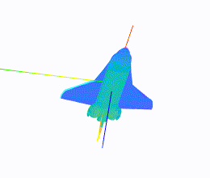

Rollen S. D'Souza is currently a PhD Candidate in Electrical & Computer Engineering specializing in the theory of nonlinear control design at the University of Waterloo in Waterloo, Ontario, Canada.
He is supervised by Prof. Chris Nielsen

Underactuated control — two inputs, pitch and yaw — point the nose of the body down.
The uncontrolled rotation about the body's forward axis is compensated for using the other two control actions.
Recent Posts
$partial("templates/post-list.html")$
More About Rollen
Rollen graduated in 2017 with his Bachelors of Software Engineering (B.S.E.) during which he completed a number of cooperative work terms in the software engineering field with applications in game development, media programming and application programming.
He complimented his degree with a joint in Applied Mathematics.
Late in the degree, his interests drove towards the general mathematics of control theory and its applications to robotics and aerospace.
Currently Rollen investigates an application of exterior differential systems to solving feedback equivalence problems.
These are problems that appear in designing nonlinear control laws for nonlinear systems such as those that model the physical (Newtonian) dynamics of a robotic arm.